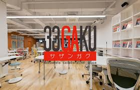
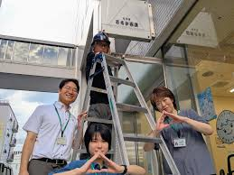
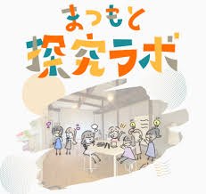
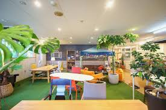

松本の「今」を知り、理想の「場」を語り合おう！

松本駅から徒歩圏内にある、市内最大級のテレワーク拠点です。単なる「作業場所」に留まらず、学生や起業家が交差する刺激的な場となっています。最大の魅力は「交流コンシェルジュ」の存在。やりたいことがある学生と、面白いアイデアを求める企業を繋ぐ役割を担っています。高速Wi-Fiや電源完備といったハード面はもちろん、スキルアップ講座やキャリア相談会などのソフト面も充実。世代を超えた化学反応が日々生まれており、新しい一歩を踏み出したい若者にとって、これ以上ないほど心強いプラットフォームといえます。

松本市役所にある、若者の「やってみたい」を本気で応援する部署です。行政という枠組みを超え、若者が主役となって街を面白くするための並走支援を行っています。活動資金の助成や場所の提供、ネットワークの紹介など、具体的なバックアップ体制が整っているのが特徴です。「松本わかもの100人会議」などの対話イベントも主催しており、学生の声を直接市政に届ける架け橋としての役割も担っています。地域課題の解決やプロジェクト立ち上げの際に、真っ先に相談したい強力な味方といえる存在であり、若者の情熱を街の動力に変えてくれます。

中高生や大学生が、放課後や休日にふらっと立ち寄れる「街のサードプレイス」です。特別な目的がなくても、雑談や読書をしながら自由に過ごせる安心感が魅力です。ここでは、学校や家庭とは異なる「斜めの関係」の大人や先輩と出会うことができます。自分の「気になる」を深掘りする探究活動のサポートも行っており、誰かの目を気にせず自分をアップデートできる環境が整っています。年下の世代を支えるメンターとして大学生が関わる機会もあり、多世代がフラットに繋がり、学び合える貴重な拠点となっています。居場所を求める全ての若者に開かれています。

地元で愛されるパン屋「スイート」が運営する、木のぬくもり溢れるワークスペースです。1階から漂う焼きたてパンの香りとリラックスした雰囲気が、創造的な思考を活性化させてくれます。ガチガチのビジネス空間ではないため、初対面同士でも自然と会話が生まれやすいのが最大の利点です。靴を脱いでくつろげるスペースもあり、まるで誰かの家で話しているようなアットホームな空気感の中で交流が楽しめます。地域を面白くしたい大人と感性豊かな若者が、美味しいものを囲みながらフラットに未来を語り合える温かい拠点として、多くの人に親しまれています。
※面白い回答はポストイットに書いて画用紙へ！